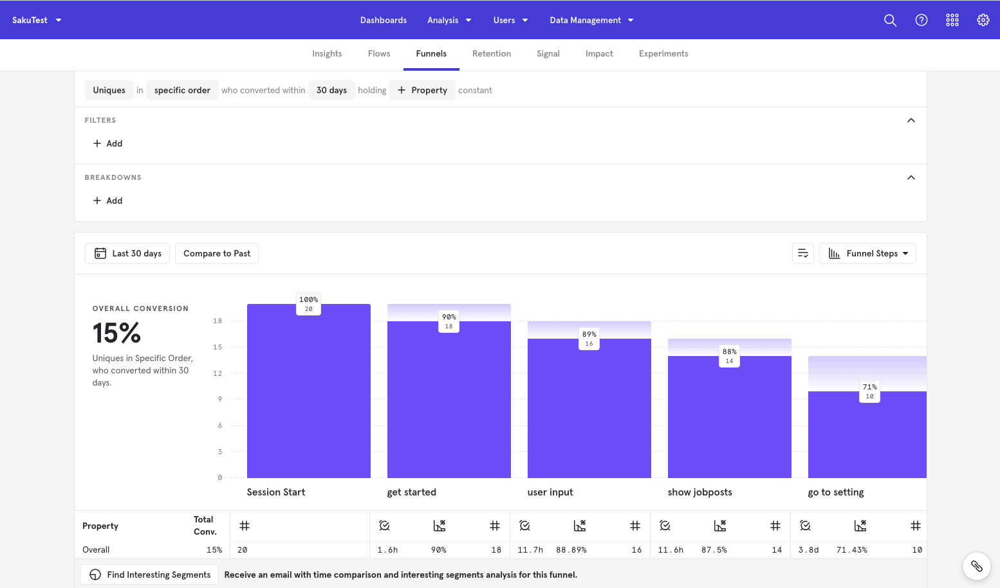
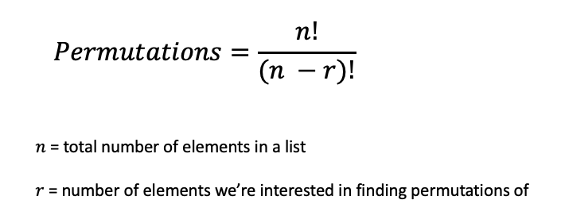
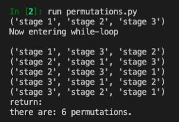

Statistics & Probability in Code
Exploring Statistics & Probability Concepts Using Code
Table of contents
Overview
Itertools are a core set of fast, memory efficient tools for creating iterators for efficient looping (read the
documentation here).
Itertools Permutations
One (of many) uses for itertools is to create a permutations() function that will return all possible combinations of items in a list.
I was working on a project that involved user funnels with different stages and we were wondering how many different “paths” a user could take, so this was naturally a good fit for using permutations.
 Sample Funnel
In our hypothetical example, we’re looking at a funnel with three stages for a total of 6 permutations. Here’s the formula:

If you’re using a sales/marketing funnel, you’ll have in mind what your funnel would look like so you may not want all possible paths, but if you’re interested in exploring potentially overlooked paths, read on.
Here’s the python
documentation for itertools, and permutations specifically. We’ll break down the code to better understand what’s going on in this function.
note: I found a clearer alternative after the fact. Feel free to skip to the final section below, although there is value in comparing the two versions.
We’ll start off with the iterable which is a list with three strings. The permutations function takes in two parameters, the iterable and r which is the number of items from the list that we’re interested in finding the combination of. If we have three items in the list, we generally want to find all possible combinations of those three items.
Here is the code, and subsequent breakdown:
# list of length 3
list1 = ['stage 1', 'stage 2', 'stage 3']
# iterable is the list
# r = number of items from the list to find combinations of
def permutations(iterable, r=None):
"""Find all possible order of a list of elements"""
# permutations('ABCD',2)--> AB AC AD BA BC BD CA CB CD DA DB DC
# permutations(range(3))--> 012 021 102 120 201 210
# permutations(list1, 6)--> ...720 permutations
pool = tuple(iterable)
n = len(pool)
r = n if r is None else r
if r > n:
return
indices = list(range(n)) # [0, 1, 2]
cycles = list(range(n, n-r, -1)) # [3, 2, 1]
yield tuple(pool[i] for i in indices[:r])
print("Now entering while-loop \n")
while n:
for i in reversed(range(r)):
cycles[i] -= 1
if cycles[i] == 0:
indices[i:] = indices[i+1:] + indices[i:i+1]
cycles[i] = n - i
else:
j = cycles[i]
indices[i], indices[-j] = indices[-j], indices[i]
yield tuple(pool[i] for i in indices[:r])
print("indices[:r]", indices[:r])
print("pool[i]:", tuple(pool[i] for i in indices[:r]))
print("n:", n)
break
else:
print("return:")
return
#permutations(list1, 6)
perm = permutations(list1, 3)
count = 0
for p in perm:
count += 1
print(p)
print("there are:", count, "permutations.")
The first thing we do is take the iterable input parameter is turn it from a list into a tuple.
pool = tuple(iterable)
There are several reasons to do this. First, tuples are faster than lists; the permutations() function will do several operations to the input so changing it to a tuple allows faster operations and because tuples are immutable, we can do a bunch of different operations without fear that we might inadvertently change the list.
We then create n from the length of pool (in our case it’s 3) and the additional r parameter, which defaults to None is also 3 as we’re interested in seeing all combinations of a list of three elements.
We also have a line that ensures that r can never be greater than the number of elements in the iterable (list).
if r > n:
return
Next, we create indices and cycles. Indices are basically the index of each item, starting with 0 to 2, for three items. Cycles uses range(n, n-r, -1), which in our case is range(3, 3-3, -1); this means start at three and end at zero, in -1 steps.
The next chunk of code is a while-loop that will continue for the length of the list, n (note the break at the bottom to exit out of this loop).
After each if-else cycle, a new set of indices are created, which then gets looped through with pool, the interable parameter input, which changes the order of the elements in the list.
You’ll note in the commented code above, cycles start off at [3,2,1] and indices start off at [0,1,2]. Each loop through the code changes the indices where indices[i:] successively gets longer [2], then [1,2], then [1,2,3]. While cycles changes as it trends toward [1,1,1], which point the code breaks out of the loop.
while n:
for i in reversed(range(r)):
cycles[i] -= 1
if cycles[i] == 0:
indices[i:] = indices[i+1:] + indices[i:i+1]
cycles[i] = n - i
else:
j = cycles[i]
indices[i], indices[-j] = indices[-j], indices[i]
yield tuple(pool[i] for i in indices[:r])
print("indices[:r]", indices[:r])
print("pool[i]:", tuple(pool[i] for i in indices[:r]))
print("n:", n)
break
else:
print("return:")
The permutations(iterable, r) function actually creates a generator so we need to loop through it again to print out all the permutations of the list.
<generator object permutations at 0x7fe19400fdd0>
We add another for-loop at the bottom to print out all the permutations:
perm = permutations(list1, 3)
count = 0
for p in perm:
count += 1
print(p)
print("there are:", count, "permutations.")
Here is our result:

A Clearer Alternative: Permutation Using Recursion
As is often the case, there is a better way I found in retrospect from this stack overflow (h/t to Eric O Lebigot):
def all_perms(elements):
if len(elements) <= 1:
yield elements # Only permutation possible = no permutation
else:
# Iteration over the first element in the result permutation:
for (index, first_elmt) in enumerate(elements):
other_elmts = elements[:index] + elements[index+1:]
for permutation in all_perms(other_elmts):
yield [first_elmt] + permutation
The enumerate built-in function obviates the need to separately create cycles and indices. The local variable other_elmts separates the other elements in the list from the first_elmt, then the second for-loop recursively finds the permutation of the other elements before adding with the first_elmt on the final line, yielding all possible permutations of a list. As with the previous case, the result of this function is a generator which requires looping through and printing the permutations.
I found this much easier to digest than the documentation version.
Permutations can be useful when you have varied user journeys through your product and you want to figure out all the possible paths. With this short python script, you can easily print out all options for consideration.
Take Aways
From the perspective of a user funnel, permutations allow us to explore all possible paths a user might take. For our hypothetical example, a three-step funnel yields six possible paths a user could navigate from start to finish.
Knowing permutations should also give us pause when deciding whether to add another “step” to a funnel. Going from a three-step funnel to a four-step funnel increases the number of possible paths from six to 24 - a quadruple increase.
Not only does this increase friction between your user and the ‘end goal’ (conversion), whatever that may be for your product, but it also increases complexity (and potentially confusion) in the user experience.
For more content on data science, machine learning, R, Python, SQL and more, find me on Twitter.